澳門影視文化——困境與突破路徑
承認局限，才能把局限變成機會。
澳門影視文化發展劣勢
- 市場規模有限，本地影視內容難以形成規模效應。
- 產業鏈條短，單一作品容易「播完即止」，缺乏持續影響力。
- 文創與文旅、消費場景脫節，難以實現商業閉環。
- 與內地及國際市場對接不足，傳播管道單一。
我們的解決路徑
- 影視＋文旅＋文創深度融合：以內容帶動場景與衍生品，透過文創大賽、直播帶貨、線下實體店變現。
- 系列 IP 開發＋橫向多元改編：打造「大灣區時代風貌三部曲」，同一 IP 衍生劇、音樂劇、廣播劇、電影、小說、文創。
- 立足灣區＋聯動民族地區＋拓展國際傳播：與新疆、內蒙古、雲南、貴州等地深度聯動，構建全球傳播網絡。
把「劣勢」變成「特色」
- 以澳門的「小」換取敘事的「精」。
- 以灣區的「連」打通內容的「通」。
- 以中華文化的「厚」支撐出海的「遠」。
案例一：「大灣區時代風貌三部曲」第 1 部——《灣區兒女》
《灣區兒女》
2020 年 6 月於央視一套黃金檔首播。這既是澳門與內地和香港合作的第一部大灣區主題電視劇，也是第一部由澳門本地企業製作、出品的長篇電視劇，植入了豐富的澳門元素，填補了澳門在華語電視劇創作生產領域的空白；同時它也是第一部完整反映澳門回歸 20 周年巨大變化的電視劇。
可以說，《灣區兒女》架起了一座粵港澳之間的文化大橋，具有標誌性意義。
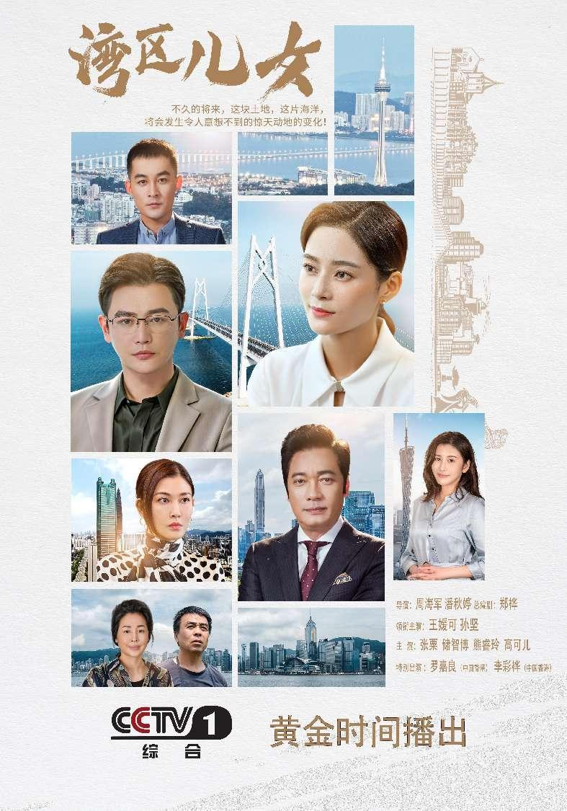
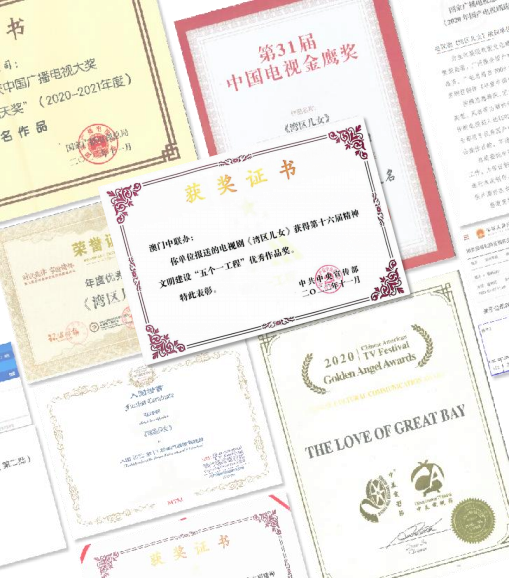
《灣區兒女》文創文旅衍生
從一部劇，到一場大賽、一條旅遊路線、一組明星帶貨的文創產品。
「灣區兒女杯」文創大賽
聯合澳門科技大學共同舉辦，活動獲澳門特區政府、中聯辦、旅遊局等多方領導出席支持；國家發展和改革委員會也給予充分肯定。
「心出發游澳門」旅遊路線
與澳門旅遊局創新推出《灣區兒女》旅遊路線，跟隨劇中主角遊覽熱門景點。電視劇僅播出 18 天已有超過 9 萬人報名參加，滿意度超過 8 成。
把劇集流量變成消費
《灣區兒女》衍生的文創產品在「澳門國際直播節」中由董明珠進行「帶貨」銷售，讓消費者體驗明星同款文創產品，銷量和銷售資料可觀。
借助《灣區兒女》的孵化平台，衍生了電視劇男一號孫堅代言的發財鼠禮盒，在直播間掀起一股搶購風潮。
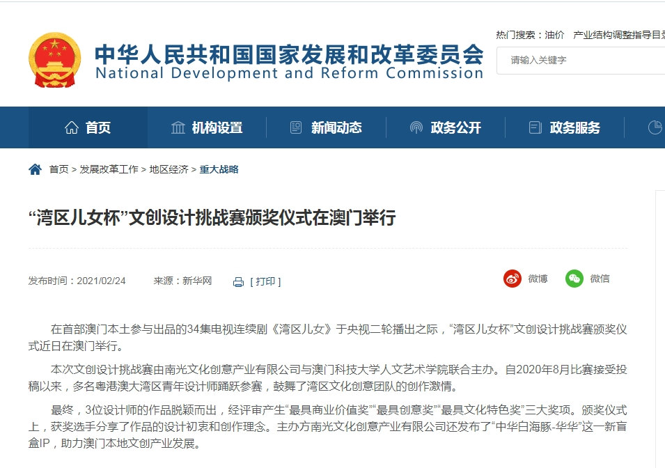
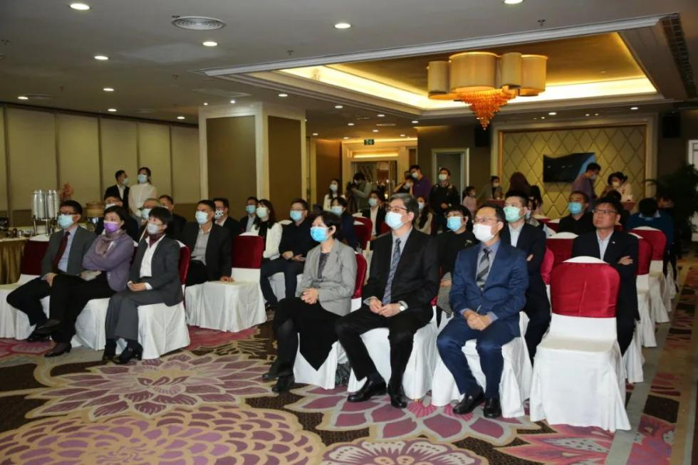
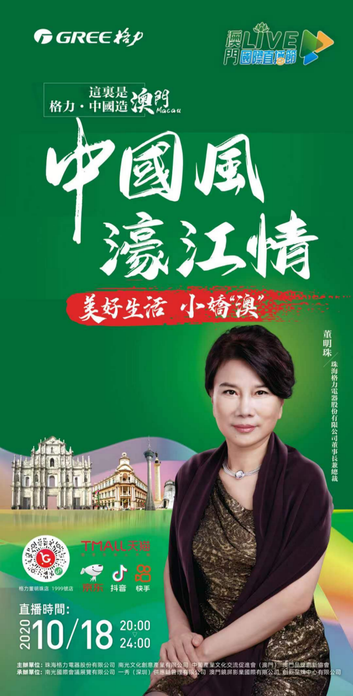
案例二：「大灣區時代風貌三部曲」第 2 部——《青春之城》
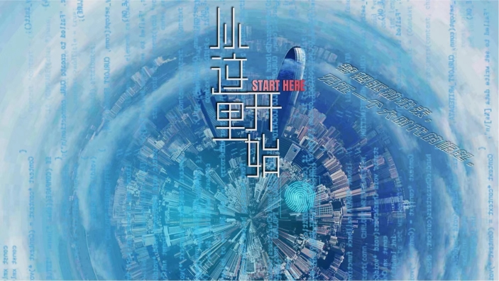
《青春之城》
國內首部描寫人工智能製造的現實主義題材作品，力邀秦海璐、林雨申、熱依紮、朱雨辰、孫陽、黃米依，以及臺灣演員黃維德、香港演員羅嘉良等共同演繹。2023 年 4 月於央視一套首播，愛奇藝、騰訊視頻同期熱播。
首播當晚《新聞聯播》對本劇進行報導，開播十分鐘收視率破 1，上線第一天全國收視率第一；播出期間百餘家媒體報導，全網點擊 20 億+、微博傳播話題閱讀 1.2 億+、新媒體點擊 5 億+。
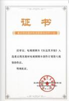
IP 橫向改編——文藝精品二創
同一 IP，跨媒介衍生，延長內容生命週期。
影視小說《從這裡開始》
- 改編自電視劇《青春之城》，2022 年 9 月由廣東人民出版社出版。
- 被評價為「以文藝修史、以精神鑄魂」，成為記錄大灣區發展的重要文藝作品。
《我從灣區來看你》
- 取材於《青春之城》孟夢故事線，2024 年 5 月在央廣中國之聲播出。
- 已在數十家省級媒體、上百家地市及電臺和融媒平臺輪番播出，覆蓋數億人群。
- 獲中宣部、廣東省「五個一工程」獎等多項榮譽。
《地上的雲》
- 首部大灣區與新疆融合民族特色文化傳承題材影片，以廣東援疆企業為原型。
- 蔣勤勤、陳建斌領銜主演，已完成拍攝工作。
《青春之城》《織夢》
- 音樂劇《青春之城》改編自同名電視劇，2024 年 12 月起在北京、深圳、佛山等多地巡演。
- 音樂劇《織夢》改編自廣播劇《我從灣區來看你》，講述廣東青年參與援疆棉紡產業建設的故事，已完成基本創排。
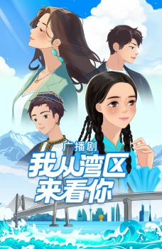
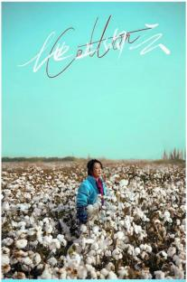
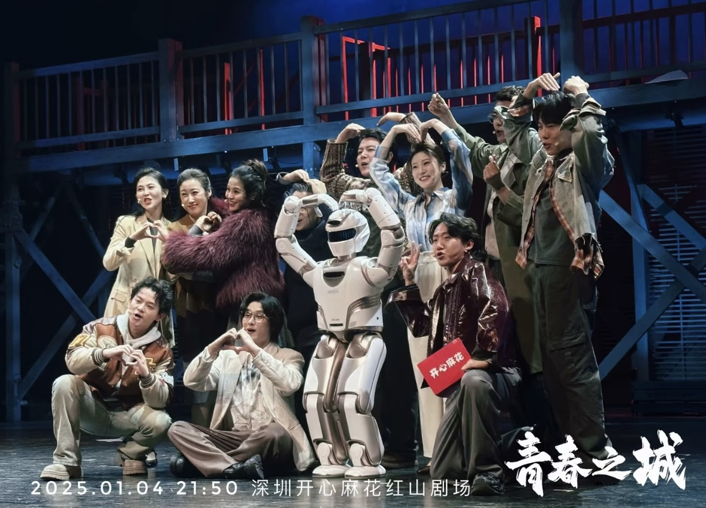
城市記憶與時代浪潮的藝術表達——音樂劇《潮起大灣》
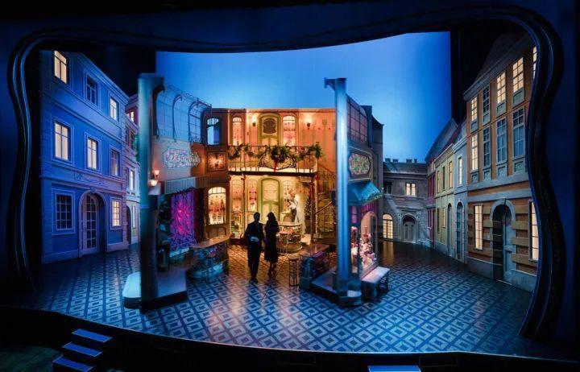
《潮起大灣》
作品根據電視劇《灣區兒女》改編創作。該項目獲得 2025 年度國家藝術基金大型舞台劇和作品創作資助、澳門特別行政區政府文化發展基金資助，以及《橫琴粵澳深度合作區文化事業發展扶持辦法》2025 年度扶持，並首次以音樂劇形式代表澳門參演第七屆全國少數民族文藝會演。
作品由中國音樂劇協會會長鍾浩擔任總導演，主創團隊匯聚澳門及內地的優秀藝術人才；結合冰屏技術與多媒體影像，營造富有層次感的視覺空間。截至目前，已先後在福州、泉州、澳門、北京等地開展線上及線下演出共 16 場。
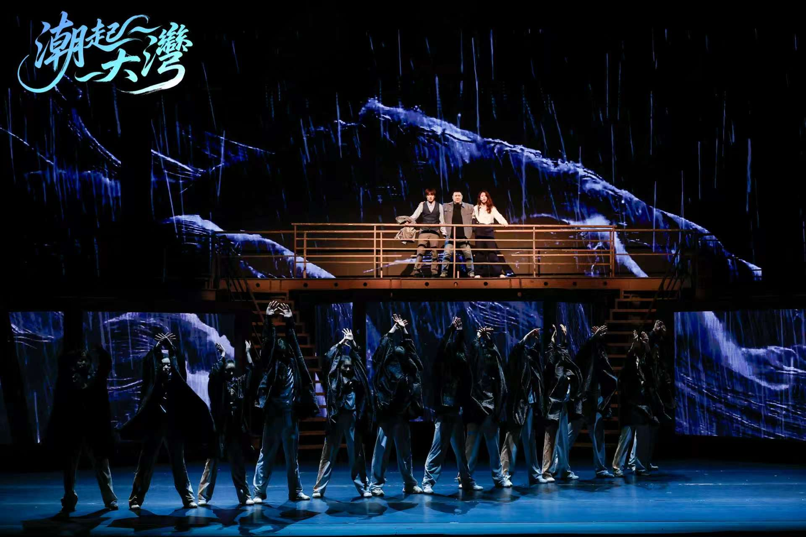
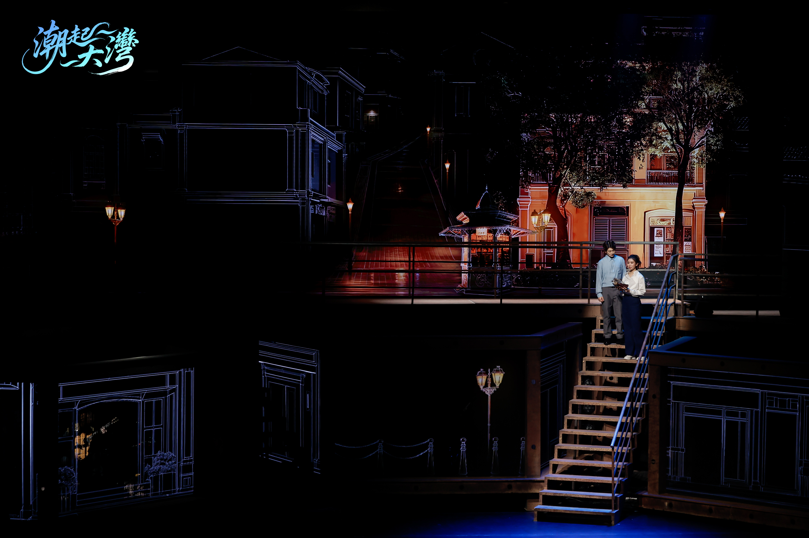
中華文化出海
立足粵港澳大灣區＋聯動內地及民族地區＋國際傳播，搭建中華文化交流的橋樑。
疍家文化 · 嶺南習俗
電視劇《灣區兒女》1:1 還原搭建了疍家漁村，呈現獨特的疍家水上婚禮；劇中還融入廣東醒獅、賽龍舟等嶺南風俗，對疍家以及嶺南文化都做了鮮明的表達。
壯麗邊疆風貌
《青春之城》在新疆吐魯番取景拍攝，盡顯新疆大美風光與濃郁獨特的風土人情，讓邊疆故事隨著劇集走向全國與世界。
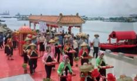
國際傳播成果
《灣區兒女》劇集已上線 YouTube 平台，並配製西班牙語、法語、俄語、阿拉伯語版本上線 CGTN 電視及網絡平台，面向全球播出。
《青春之城》已成功登陸東南亞、北美、歐洲、澳洲等全球核心市場，觸達超 100 多個國家；並譯製阿拉伯語，於 2025 年 5 月在中阿衛視衛星頻道播出，覆蓋西亞北非 22 個阿拉伯國家和地區近 5 億人口。
BIGUI（碧鬼）視聲頻 IP 節目長期專注國際化內容、多語種輸出、多 IP 策劃；其中《在中國》宣傳京郊青龍峽旅遊一集，單條視頻經全球 237 家媒體傳播，達到 2 億多播放量，並在 AP 美聯社首頁被推薦、被國外 102 家媒體採用及播出。
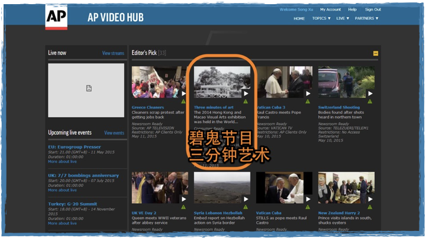
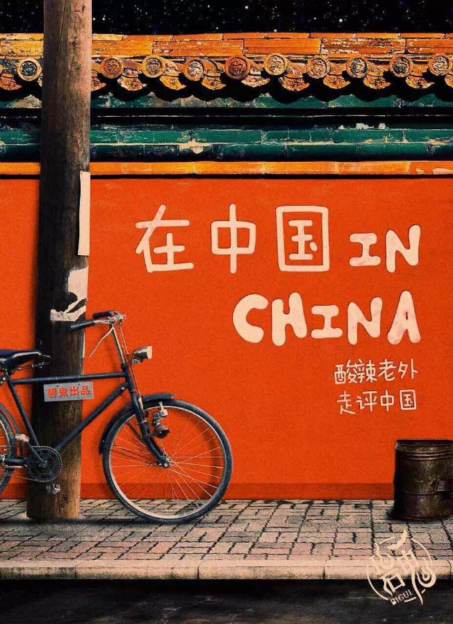
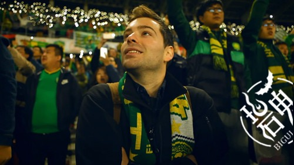
影視實踐與公益、交流互為支撐。更多協會的公益行動與海內外交流，請見「網絡·公益」欄目。
前往網絡·公益 →